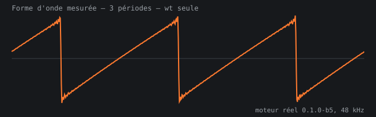
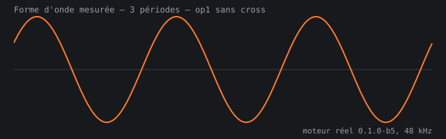
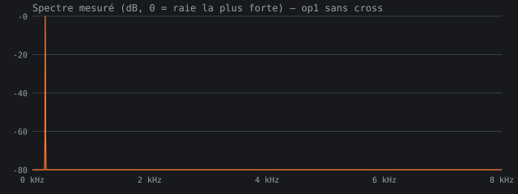
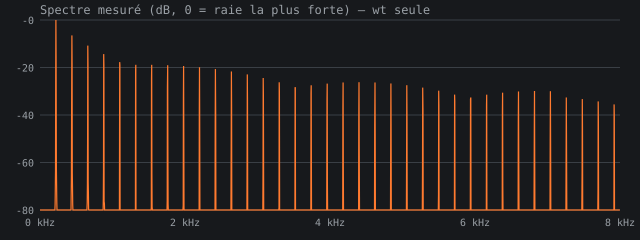
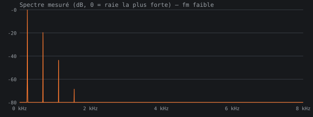
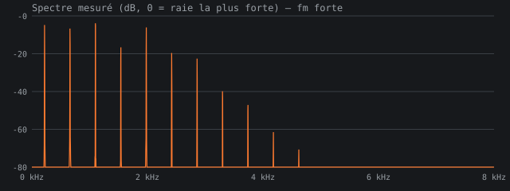
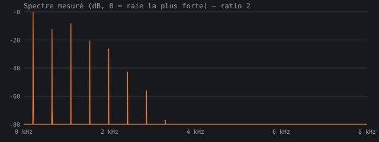
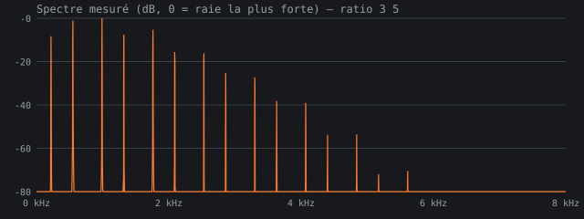

Comprendre le texte principal explique sans prérequis. Manipuler les étapes, réglages et exemples se font dans l'instrument. Approfondir les blocs repliés « Approfondir · » donnent le détail technique : vous pouvez les ignorer en première lecture.
Chapitre 1
Bienvenue dans SUBDESTRUCKT
SUBDESTRUCKT est un instrument logiciel construit autour d'une idée : faire dialoguer deux moteurs sonores. Ce chapitre vous présente l'instrument, ce qu'il sait déjà faire dans la version 0.1.0-b5, et ce qui viendra plus tard.
Version prototype
Vous utilisez SUBDESTRUCKT 0.1.0-b5, une vertical slice : un prototype complet mais volontairement réduit, qui traverse toute la chaîne (clavier → son → sauvegarde) avec un petit nombre de fonctions. Son interface est une interface de diagnostic, pas l'interface définitive. Ce manuel ne décrit que ce qui existe réellement dans cette build.
Qu'est-ce qu'un synthétiseur ?
Comprendre
Un synthétiseur fabrique du son à partir de rien : au lieu d'enregistrer un instrument, il calcule une vibration. Cette vibration passe ensuite par des étapes qui la transforment : on la colore, on la façonne dans le temps, on règle son volume.
Trois mots reviennent sans cesse dans ce manuel :
un oscillateur est la source qui produit une vibration régulière ;
une modulation est l'action d'un signal qui en fait varier un autre (par exemple un oscillateur qui en déforme un second) ;
un moteur sonore est un ensemble cohérent d'oscillateurs et de réglages ayant sa propre manière de produire du son.
Deux moteurs et un pont : WT, FM et CROSS
SUBDESTRUCKT 0.1.0-b5 contient :
un moteur Wavetable (« WT ») : un oscillateur qui relit une forme d'onde riche, une dent de scie (chapitre 6) ;
un moteur FM à deux opérateurs, OP1 et OP2 : deux oscillateurs sinusoïdaux qui peuvent se moduler l'un l'autre (chapitre 7) ;
CROSS, le pont entre les deux : la WT peut moduler les opérateurs FM, et les opérateurs peuvent moduler la WT (chapitre 8). C'est la signature de l'instrument.
Schéma pédagogiqueComment une note MIDI devient du son. Les flèches montrent les routes du réglage initial (« Preset init ») : OP2 module OP1, la WT et OP1 se modulent mutuellement.
De la note au son, en cinq étapes
Vous jouez une note. Le clavier envoie un message MIDI : quelle touche (la hauteur) et avec quelle force (la vélocité). Le MIDI ne transporte aucun son, seulement des instructions.
La voix choisit la note. SUBDESTRUCKT est monophonique : une seule note sonne à la fois, la dernière jouée.
Les oscillateurs vibrent à la hauteur de la note (WT) ou à un multiple de celle-ci (OP1 et OP2, selon leur ratio), et se modulent les uns les autres selon les routes actives.
Le mélange additionne les trois oscillateurs selon leurs niveaux (WT Level, OP1 Level, OP2 Level).
L'enveloppe Amp donne au son sa forme dans le temps (attaque, tenue, extinction), puis le gain de sortie règle le volume final, identique sur les deux canaux stéréo.
Identité sonore
SUBDESTRUCKT vise des sons métalliques, industriels et agressifs, des textures et des drones. Dans ce prototype, ce caractère vient de trois ingrédients : une forme d'onde riche (WT), la modulation entre opérateurs (FM) et surtout l'interaction entre les deux moteurs (CROSS).
Ce que contient exactement la build 0.1.0-b5
Disponible dans 0.1.0-b5
Prévu pour la V1, absent ici
Une wavetable : dent de scie limitée en bande
Banques de wavetables, axes X/Y, transformations Z
Deux opérateurs FM sinusoïdaux (OP1, OP2) en modulation de phase
Quatre opérateurs, autres formes, modes FM linéaire, TZFM, exponentiel
CROSS dans les deux sens, CROSS Master et intensités par direction
Filtres, Destruction, matrice de modulation globale, mode Drone, Quality Eco/Normal/High
Le chapitre 16 détaille les limitations connues et les différences avec la future V1.
Pourquoi une « vertical slice » ?
Construire d'abord une tranche fine mais complète permet de valider l'architecture (cœur DSP indépendant, wrapper VST3, sauvegarde, installation) avant d'ajouter les fonctions. Le cœur DSP de SUBDESTRUCKT est écrit sans dépendre de JUCE ni de la DAW, ce qui le rend testable seul : les critères automatisés G-01 à G-24 sont PASS en CI pour la build 0.1.0-b5 (rapport docs/V1-ARCH-G3-REPORT.md). La recette sur un vrai Mac reste à faire : c'est l'objet du chapitre 13.
Chapitre 2
Installation et première configuration
Télécharger, vérifier, installer, puis faire reconnaître SUBDESTRUCKT par votre logiciel de musique. Chaque étape est décrite pour un débutant.
Configuration requise
Élément
Statut pour 0.1.0-b5
Ordinateur
Mac Apple Silicon. Apple M3 : configuration minimale cible (non encore certifiée). M4 et suivants : classe recommandée. M1 et M2 : hors support officiel, mais aucun blocage n'est imposé.
Machine de recette principale
Mac Studio M4 Max (recette physique à réaliser, chapitre 13).
Système
macOS 14.0 minimum déclaré (valeur de compilation, non encore validée). Seul macOS 15.8.2 a été testé, sur une machine virtuelle de CI.
Format
Plugin instrument VST3, arm64 natif. Pas d'Audio Unit (AU), pas d'application autonome, pas de version Intel/Rosetta ni Windows.
Logiciel hôte
Une DAW compatible VST3. Reason est la DAW de recette prévue. Aucune compatibilité DAW n'est encore validée : la CI n'a utilisé qu'un hôte VST3 de test et pluginval.
Manipuler Une empreinte SHA-256 est une « signature mathématique » du fichier : la moindre modification la change complètement. La vérifier garantit que vous avez exactement le fichier testé.
Ouvrez Terminal (Applications › Utilitaires).
Tapez cd ~/Downloads puis Entrée (adaptez si votre dossier de téléchargement est différent).
Tapez shasum -a 256 SUBDESTRUCKT_v0.1.0-b5_macOS_arm64.zip puis Entrée, et comparez le résultat avec l'empreinte ci-dessus.
Double-cliquez sur le ZIP : un dossier apparaît avec 5 fichiers : SUBDESTRUCKT_Installer.pkg, SUBDESTRUCKT_Uninstaller.pkg, README_FR.txt, CHANGELOG.txt, SHA256SUMS.txt.
Dans le Terminal, tapez cd (avec un espace), glissez ce dossier dans la fenêtre, Entrée, puis shasum -a 256 -c SHA256SUMS.txt : quatre lignes doivent se terminer par OK.
Si l'empreinte diffère
N'installez pas. Retéléchargez depuis le lien direct. Ce contrôle est le test R-01 de la recette.
3. Installer
Fermez votre DAW. L'installateur refuse d'agir si le plugin est utilisé par un programme ouvert.
Double-cliquez sur SUBDESTRUCKT_Installer.pkg. macOS affiche que le paquet provient d'un développeur non identifié : c'est normal, il n'est pas signé (build interne).
Ouvrez Réglages Système › Confidentialité et sécurité. En bas de la page, un message concerne SUBDESTRUCKT_Installer.pkg : cliquez « Ouvrir quand même », puis confirmez.
Suivez l'installateur et saisissez votre mot de passe administrateur : le plugin est installé pour tous les utilisateurs du Mac.
L'écran final indique « SUBDESTRUCKT 0.1.0-b5 est installé ».
Ce que fait l'installateur
Il copie le plugin dans /Library/Audio/Plug-Ins/VST3/SUBDESTRUCKT.vst3.
Il vérifie ensuite son identité, sa version, son architecture arm64 et sa signature ad hoc, et écrit un petit manifeste dans /Library/Application Support/Labtechno/SUBDESTRUCKT/.
Il refuse sans rien modifier si : le Mac n'est pas Apple Silicon, macOS est antérieur à 14.0, l'emplacement est occupé par un autre élément ou un lien symbolique, ou une DAW utilise le plugin.
Si la vérification échoue après copie, il restaure l'installation précédente.
Gatekeeper
N'utilisez jamais de commande qui désactive Gatekeeper pour tout le système. L'autorisation « Ouvrir quand même » ne concerne que ce paquet.
4. Faire reconnaître le plugin par la DAW
Après l'installation :
Lancez la DAW. Si elle n'analyse pas automatiquement les nouveaux plugins, ouvrez sa gestion des plugins et lancez une nouvelle analyse VST3.
Cherchez SUBDESTRUCKT, fabricant Labtechno, dans les instruments VST3.
Créez une piste instrument avec SUBDESTRUCKT.
Sélectionnez votre clavier MIDI comme entrée de cette piste (ou toutes les entrées), puis armez ou sélectionnez la piste pour l'entendre en jouant.
Dans les réglages audio de la DAW, choisissez votre interface audio, la fréquence d'échantillonnage (44,1, 48, 88,2 ou 96 kHz) et une taille de buffer raisonnable (par exemple 128 ou 256 échantillons).
Reason : points à confirmer
Les menus exacts de Reason pour la gestion des plugins VST3, la sélection MIDI, la configuration audio et la compensation de latence n'ont pas pu être vérifiés dans la documentation officielle de Reason Studios lors de la rédaction (les pages correspondantes ne sont pas lisibles sans navigateur). Seul ce point a été confirmé : les réglages de Reason s'ouvrent depuis le menu Reason › Settings sur Mac. Reportez-vous au manuel de votre version de Reason pour les menus précis ; la compatibilité de SUBDESTRUCKT avec Reason sera établie par la recette (tests R-03 à R-12).
5. Désinstaller
Fermez la DAW.
Ouvrez SUBDESTRUCKT_Uninstaller.pkg (même autorisation « Ouvrir quand même »).
Le désinstallateur retire uniquement le plugin SUBDESTRUCKT, son manifeste et son reçu d'installation. Vos projets, vos autres plugins et vos fichiers personnels ne sont pas touchés.
Il refuse d'agir, sans rien supprimer, si SUBDESTRUCKT n'est pas installé (message « SUBDESTRUCKT n'est pas installé »), si l'élément présent n'est pas SUBDESTRUCKT, si la version installée est plus récente que lui, ou si une DAW utilise le plugin. Le détail est consigné dans /var/log/install.log (application Console).
6. Réinstaller
Relancez simplement SUBDESTRUCKT_Installer.pkg. Une réinstallation par-dessus une installation existante est gérée : l'ancienne version est sauvegardée pendant l'opération et restaurée en cas d'échec.
Signature, notarisation et licence
Plugin VST3
Signature ad hoc uniquement (pas de certificat Developer ID).
Paquets .pkg
Non signés.
Notarisation Apple
Non effectuée.
Conséquence
Livraison interne uniquement ; distribution publique bloquée.
Licence
SUBDESTRUCKT utilise JUCE 9 (AGPLv3 ou licence commerciale : choix non arbitré) et le SDK VST3 3.8 (MIT). Mentions dans THIRD_PARTY_NOTICES.txt à l'intérieur du plugin.
Chapitre 3
Mes 10 premières minutes avec SUBDESTRUCKT
Un parcours guidé en dix étapes, sans théorie : à chaque étape, une action, les valeurs exactes, ce que vous devez entendre, et quoi faire si ce n'est pas le cas.
Avant de commencer
SUBDESTRUCKT est installé (chapitre 2), votre clavier MIDI est branché, et le volume général de votre système est bas. Les curseurs de l'interface se règlent à la souris ; vous pouvez aussi cliquer dans la case de valeur à droite d'un curseur et taper un nombre.
Étape 1 — Ouvrir l'instrument
Action : dans votre DAW, créez une piste instrument avec SUBDESTRUCKT (Labtechno) et ouvrez son interface.
Résultat attendu : une fenêtre sombre titrée « SUBDESTRUCKT // diagnostic ARCH-G3 // build 0.1.0-b5 », avec 22 curseurs à gauche et des informations techniques à droite (chapitre 4).
Si ce n'est pas le cas : chapitre 14, « Plugin non détecté ».
Étape 2 — Première note
Action : cliquez sur Preset init (sous la liste des routes), puis jouez et tenez une note au milieu du clavier.
Résultat attendu : un son immédiat, brillant et légèrement métallique, qui s'éteint en 0,3 s environ quand vous relâchez la touche. En bas à droite, la ligne « Voix » affiche le numéro de la note et « gate on ».
Preset init (réglages par défaut)
Rendu du moteur réel 0.1.0-b5 · 48 kHz · normalisé à −20 dBFS RMS · 3.0 s · détails au chapitre 12
À écouter
Le son est stable tant que vous tenez la touche : c'est normal, aucun mouvement automatique n'existe dans ce prototype (pas de LFO).
Si vous n'entendez rien : vérifiez que la piste reçoit votre clavier (la ligne « Voix » doit changer quand vous jouez), puis chapitre 14, « Absence de son ».
Étape 3 — Un volume raisonnable
Action : réglez le volume avec le fader de la piste dans la DAW, ou avec le curseur Output Gain (−6 dB par défaut, de −48 à +6 dB).
Résultat attendu : la ligne « Crête » affiche le niveau maximal de chaque bloc audio, en dBFS (0 dBFS = maximum numérique). Visez des crêtes autour de −12 à −6 dBFS.
Attention
Monter Output Gain au maximum avec des modulations fortes peut produire un son très fort. Réglez toujours le volume de votre système avant d'expérimenter.
Étape 4 — Qu'est-ce qui produit le son ?
Trois sources sont mélangées. Leurs volumes sont réglés par trois curseurs :
Curseur
Valeur initiale
Rôle
WT Level
0,5
volume de la wavetable
OP1 Level
0,5
volume de l'opérateur 1
OP2 Level
0
volume de l'opérateur 2 (muet au départ)
OP2 est muet, mais il travaille quand même : il module OP1 (route « OP2 > OP1 »). Un oscillateur peut agir sur le son sans être entendu directement.
Rendu du moteur réel 0.1.0-b5 · 48 kHz · normalisé à −20 dBFS RMS · 3.0 s · détails au chapitre 12
Pourquoi CROSS Master à 0 ? Dans le réglage initial, OP1 module la WT (route « OP1 > WT »). Mettre CROSS Master à 0 coupe toutes les modulations entre moteurs : vous entendez la WT pure.
Étape 6 — Le moteur FM seul
Réglages : WT Level 0, OP1 Level 0.8, OP2 Level 0, CROSS Master 0 (FM OP2>OP1 reste à 1).
À entendre : un son plus rond que la WT, avec un caractère « électrique ». C'est OP1, une sinusoïde, enrichie par la modulation de OP2.
FM seule (OP1 Level 0,8, FM OP2>OP1 1 rad, WT Level 0, CROSS Master 0)
Rendu du moteur réel 0.1.0-b5 · 48 kHz · normalisé à −20 dBFS RMS · 3.0 s · détails au chapitre 12
Étape 7 — Changer le timbre
Action : faites varier FM OP2>OP1 de 0.3 à 4 en tenant une note.
À entendre : à 0,3 le son est presque pur ; plus vous montez, plus il devient brillant et dense. Le volume général change peu : c'est la couleur (le timbre) qui change.
Profondeur de modulation : 0,3 rad / 4 rad
Rendu du moteur réel 0.1.0-b5 · 48 kHz · normalisé à −20 dBFS RMS · 3.0 s · 3.0 s · détails au chapitre 12
Étape 8 — Les ratios
Réglages : FM OP2>OP1 2, puis OP2 Ratio 2, puis 3.5.
À entendre : avec un ratio entier (2), le son reste « musical » ; avec 3,5, il devient métallique, comme une cloche ou une tôle frappée.
OP2 Ratio : 2 / 3,5
Rendu du moteur réel 0.1.0-b5 · 48 kHz · normalisé à −20 dBFS RMS · 3.0 s · 3.0 s · détails au chapitre 12
Étape 9 — Faire dialoguer les deux moteurs
Réglages : Preset init, puis WT Level 0.5, OP1 Level 0.5, CROSS WT>OP1 1.5, CROSS OP1>WT 1.5. Tenez une note et descendez lentement CROSS Master de 1 à 0, puis remontez.
À entendre : à 1, les deux moteurs se déforment mutuellement : le son devient rugueux et complexe. À 0, vous retrouvez le simple mélange des deux moteurs, sans coupure ni redémarrage de la note.
CROSS dans les deux sens (CROSS WT>OP1 1,5 rad, CROSS OP1>WT 1,5 rad, Master 1)
Rendu du moteur réel 0.1.0-b5 · 48 kHz · normalisé à −20 dBFS RMS · 3.0 s · détails au chapitre 12
Étape 10 — Sauvegarder
Action : sauvegardez votre projet dans la DAW.
Résultat : tous les réglages de SUBDESTRUCKT (les 22 curseurs et les routes) sont enregistrés dans le projet. Il n'existe pas encore de bibliothèque de presets : pour conserver un son, gardez le projet, ou dupliquez la piste.
Attention
« Preset init » remet tout à zéro sans confirmation, et il n'y a pas d'annulation (undo) des routes dans ce prototype.
Bravo : vous avez parcouru l'essentiel de l'instrument. Le chapitre 4 décrit chaque commande ; les chapitres 5 à 8 expliquent ce que vous venez d'entendre.
Chapitre 4
Découverte complète de l'interface
L'interface de 0.1.0-b5 est une interface de diagnostic : fonctionnelle et précise, pas encore l'interface définitive. Voici chaque zone, chaque commande et chaque indicateur.
Capture réelleSUBDESTRUCKT 0.1.0-b5 sur macOS (capture produite par la CI de la build livrée, note 57 jouée à 44,1 kHz). Les repères numérotés sont ajoutés pour ce manuel ; cliquez sur l'image pour l'agrandir sans repères.
1 Titre : nom, numéro de build (0.1.0-b5) et début du commit source. Vérifiez-le en cas de doute sur la version.
2 Enveloppe Amp (Attack, Decay, Sustain, Release) et Amp Velocity : forme du volume de chaque note.
3 Output Gain : volume final, en dB.
4 WT Level, OP1 Level, OP2 Level : volume de chaque oscillateur dans le mélange.
5 OP1 Ratio, OP2 Ratio : hauteur des opérateurs par rapport à la note.
6 FM OP2>OP1, FM OP1>OP2, FM OP1 Self, FM OP2 Self : profondeurs des modulations entre opérateurs.
7 CROSS WT>OP1, WT>OP2, OP1>WT, OP2>WT : profondeurs des modulations entre moteurs.
8 CROSS Master, CROSS WT>FM, CROSS FM>WT : dosage global et par direction de CROSS.
9 Configuration active : fréquences, oversampling K, retard D, lecteur de retard, latence, état de transition (indicateurs, chapitre 10).
10 Table des huit routes possibles : présente ou absente, identifiant, classe causale I ou D, profondeur Effective, gain de transition.
11 Boutons + (ajouter la route) et − (retirer la route). Un seul est actif à la fois.
12 Panic : coupe immédiatement le son et réinitialise les mémoires internes.
13 Preset init : remet les 22 paramètres et les routes au réglage initial.
14 Dernier message (transaction appliquée ou refusée, état chargé ou refusé) et prochain identifiant de route (nextRouteId).
15 Télémétrie : note jouée, gate, niveau d'enveloppe, crêtes de sortie, compteurs de sûreté.
Lire les curseurs
Chaque ligne de gauche contient : le nom du paramètre suivi de son unité entre parenthèses, un curseur horizontal, et une case de valeur. Vous pouvez faire glisser le curseur, ou cliquer dans la case et taper une valeur. Survoler un nom affiche son identifiant stable (par exemple amp.attack).
Les unités : s secondes ; lin valeur linéaire de 0 à 1 ; dB décibels ; x f0 multiple de la fréquence de la note ; rad radians (unité de profondeur de modulation de phase).
Valeurs affichées
Les cases affichent 7 décimales. Une valeur comme −5,9999990 dB pour Output Gain correspond à −6 dB : c'est un arrondi de calcul en virgule flottante, sans effet audible.
Les 22 paramètres
Tous les paramètres sont automatisables par la DAW et enregistrés dans le projet. Les changements de niveaux, ratios, profondeurs, CROSS, Amp Velocity et Output Gain sont lissés sur 20 ms pour éviter les sauts brusques ; les réglages d'enveloppe s'appliquent immédiatement. Valeurs extraites du registre du code source (source/core/Parameters.cpp) :
Faire apparaître ou disparaître l'interaction sans toucher aux profondeurs.
Plage
0 à 1 lin
Défaut
1 lin
Comportement
Multiplie toutes les profondeurs CROSS. À 0, CROSS est retiré sans coupure ni reset.
Effet sonore
De simple mélange (0) à interaction complète (1).
Automatisable
oui
Interactions
N'agit pas sur les routes FM internes.
CROSS WT>FM cross.fwd
Fonction
Intensité de la direction WT → FM (routes WT>OP1 et WT>OP2).
Intérêt musical
Doser une direction indépendamment de l'autre.
Plage
0 à 1 lin
Défaut
1 lin
Comportement
Multiplie les profondeurs WT>OP1 et WT>OP2.
Effet sonore
Influence de la WT sur les opérateurs.
Automatisable
oui
Interactions
Avec CROSS Master.
CROSS FM>WT cross.rev
Fonction
Intensité de la direction FM → WT (routes OP1>WT et OP2>WT).
Intérêt musical
Doser une direction indépendamment de l'autre.
Plage
0 à 1 lin
Défaut
1 lin
Comportement
Multiplie les profondeurs OP1>WT et OP2>WT.
Effet sonore
Influence des opérateurs sur la WT.
Automatisable
oui
Interactions
Avec CROSS Master.
Les commandes qui ne sont pas des paramètres
Commande
Effet
Automatisable
Boutons + / − des routes
Ajoutent ou retirent une route de modulation. Les routes sont des éléments de structure : elles ne se changent pas en continu. Chaque ajout reçoit un nouvel identifiant et une classe causale (chapitre 8). Le changement est appliqué par un fondu d'environ 2 × 128 échantillons.
Non
Panic
Rampe vers le silence en 5 ms, puis efface les mémoires internes (historiques de retard, filtre de sortie). Les notes tenues sont relâchées. Équivalent au message MIDI CC120 (All Sound Off).
Non (mais CC120 via MIDI)
Preset init
Remet les 22 paramètres à leur valeur initiale et les routes au réglage initial : OP2>OP1 (id 1, I), WT>OP1 (id 2, I), OP1>WT (id 3, D). Sans confirmation ni annulation.
Non
La DAW voit aussi un unique programme nommé « Init ». Le plugin expose en outre des paramètres techniques ajoutés par son environnement (JUCE) pour transmettre les contrôleurs MIDI : ce ne sont pas des réglages sonores de SUBDESTRUCKT.
Paramètres et indicateurs
À gauche, tout est modifiable. À droite, seuls les boutons + / −, Panic et Preset init agissent ; tout le reste est un indicateur (lecture seule), utile pour comprendre ce qui se passe et pour la recette (chapitre 10). Les indicateurs se mettent à jour environ 15 fois par seconde.
La fenêtre est redimensionnable (de 980 × 680 à 2000 × 1400 points).
Chapitre 5
Comprendre le son
Les notions indispensables pour savoir ce que font les commandes : vibration, fréquence, amplitude, forme d'onde, harmoniques, timbre, phase, modulation, enveloppe et spectre.
Simulations
Les démonstrations animées de ce chapitre sont des simulations pédagogiques dessinées par votre navigateur. Elles ne produisent pas de son et ne sont pas des rendus de SUBDESTRUCKT. Les figures marquées « Mesure » sont, elles, calculées à partir de sons réellement produits par le moteur.
Un son est une vibration
Un son est une variation rapide de la pression de l'air. Dans un ordinateur, cette variation est représentée par un signal audio : une suite de nombres qui montent et descendent autour de zéro. Une oscillation est un motif qui se répète.
Fréquence et hauteur
La fréquence est le nombre de répétitions par seconde, en hertz (Hz). Nous l'entendons comme la hauteur : plus la fréquence est élevée, plus la note est aiguë. Le La du diapason vibre à 440 Hz ; une octave plus haut, 880 Hz.
Amplitude et volume
L'amplitude est la taille de l'oscillation. Nous l'entendons comme le volume. Changer l'amplitude ne change pas la hauteur. Dans SUBDESTRUCKT, les curseurs Level, l'enveloppe Amp et Output Gain agissent sur l'amplitude.
Les décibels
Le volume est souvent exprimé en décibels (dB), une échelle logarithmique proche de notre perception. −6 dB divise l'amplitude par environ 2 ; −20 dB par 10. En numérique, dBFS prend pour référence le maximum (0 dBFS).
Forme d'onde, harmoniques et timbre
Deux sons de même hauteur et de même volume peuvent sonner très différemment : c'est le timbre. Il dépend de la forme d'onde, c'est-à-dire du dessin d'une période.
Toute forme d'onde régulière peut être vue comme une somme de sinusoïdes : la fondamentale (la note) et des harmoniques à 2, 3, 4… fois sa fréquence. Plus il y a d'harmoniques fortes, plus le son est brillant. Ajoutez des harmoniques ci-dessous : la sinusoïde devient peu à peu une dent de scie.

MesureForme d'onde de la WT de SUBDESTRUCKT (dent de scie).

MesureForme d'onde d'OP1 seul (sinusoïde).
Le spectre
Un spectre représente un son selon ses fréquences : chaque pic vertical est une composante. À gauche les graves, à droite les aigus ; plus un pic est haut, plus la composante est forte. Comparez :

MesureOP1 seul : une seule raie, la fondamentale.

MesureWT seule : toutes les harmoniques, de plus en plus faibles.
La phase
La phase indique où en est une oscillation dans son cycle (de 0 à 360°). Deux signaux identiques mais décalés en phase peuvent se renforcer ou s'annuler quand on les additionne. Faites varier le décalage : la courbe orange est la somme.
À 180°, les deux signaux s'annulent : la somme est plate. Cette notion est au cœur du moteur FM de SUBDESTRUCKT, qui module la phase (chapitre 7).
Modulation
Moduler, c'est faire varier une propriété d'un signal à l'aide d'un autre signal. Si la variation est lente, on entend un mouvement ; si elle est très rapide (à la fréquence d'une note), on entend un nouveau timbre. Dans SUBDESTRUCKT 0.1.0-b5, toutes les modulations sont rapides et agissent sur la phase : elles transforment le timbre.
Enveloppe
Une enveloppe décrit comment une propriété évolue au cours d'une note : par exemple le volume qui monte à l'attaque puis s'éteint. Chapitre 9.
Fréquence d'échantillonnage
Un ordinateur représente le son par des échantillons régulièrement espacés : 44 100 par seconde à 44,1 kHz. Ce nombre limite la fréquence la plus aiguë représentable (la moitié : 22 050 Hz à 44,1 kHz). Une fréquence plus haute que cette limite se replie et produit des sons parasites appelés repliement (aliasing). Ne confondez pas la fréquence d'échantillonnage (réglage du projet) et la fréquence d'une note.
Chapitre 6
Le moteur Wavetable
Une wavetable (« table d'onde ») est un oscillateur qui relit en boucle une forme d'onde mémorisée. Dans 0.1.0-b5, ce moteur est volontairement minimal.
Comprendre
Imaginez un disque vinyle de la longueur d'une seule période de son, lu en boucle : plus il tourne vite, plus la note est aiguë. La wavetable stocke une période de forme d'onde (2048 points) et la relit à la vitesse correspondant à la note jouée.
Ce qui existe dans 0.1.0-b5
Une seule forme d'onde : une dent de scie limitée en bande (sans repliement).
La WT joue toujours à la hauteur de la note : il n'y a pas de réglage de transposition ni de ratio pour la WT.
Une seule commande propre : WT Level (son volume dans le mélange, de 0 à 1, 0,5 par défaut).
Elle peut être modulée par OP1 et OP2 (routes CROSS OP1>WT et OP2>WT) et moduler OP1 et OP2 (CROSS WT>OP1 et WT>OP2) : chapitre 8.
Les axes X (choix de la forme), Y (morphing entre tables) et Z (transformations), ainsi que les banques de tables prévues pour la V1, ne sont pas disponibles.
Observer
MesureLa WT seule : une dent de scie.MesureToutes les harmoniques, d'amplitude 1/k (la 2e à moitié, la 3e au tiers…).
La dent de scie contient toutes les harmoniques : c'est un son brillant, « cuivré », point de départ classique pour façonner des timbres.
Manipuler et écouter
Isoler la WT : Preset init, puis WT Level 0.8, OP1 Level 0, CROSS Master 0. Jouez des notes graves puis aiguës : le caractère reste le même, seule la hauteur change.
Doser la WT dans le mélange : remettez OP1 Level à 0.5 et faites varier WT Level de 0 à 1 : vous entendez la part de brillance apportée par la WT.
Déformer la WT par le FM : voir l'étape 3 de la progression CROSS (chapitre 8).
Rendu du moteur réel 0.1.0-b5 · 48 kHz · normalisé à −20 dBFS RMS · 3.0 s · détails au chapitre 12
Limitation de bande et mip-mapping
Une dent de scie idéale contient des harmoniques jusqu'à l'infini. Celles qui dépassent la moitié de la fréquence d'échantillonnage se replieraient en fréquences parasites (repliement). Pour l'éviter, la WT de SUBDESTRUCKT contient 11 versions de la même dent de scie (un « mip-map »), chacune avec deux fois moins d'harmoniques que la précédente (de 1024 à 1 harmonique). Le moteur choisit et mélange les deux versions adaptées à la vitesse de lecture instantanée, y compris quand une modulation de phase accélère ou ralentit la lecture. La lecture entre deux points de la table est interpolée linéairement.
Mesuré par les tests automatisés : harmoniques 2 à 10 conformes à 1/k à 0,001 dB près, énergie hors harmoniques −82,8 dB (critère G-09).
Chapitre 7
Le moteur FM
Avec seulement deux sinusoïdes, la synthèse FM crée des sons brillants, métalliques ou agressifs. Ce chapitre l'explique pas à pas, à partir des commandes réelles de SUBDESTRUCKT.
L'opérateur
Un opérateur est un oscillateur sinusoïdal. SUBDESTRUCKT 0.1.0-b5 en a deux, OP1 et OP2. Chacun a deux commandes propres :
Level (OP1 Level, OP2 Level, 0 à 1) : son volume dans ce que vous entendez ;
Ratio (OP1 Ratio, OP2 Ratio, 0,25 à 16) : sa fréquence = fréquence de la note × ratio. Ratio 1 = même hauteur que la note ; 2 = une octave au-dessus ; 0,5 = une octave en dessous.
Mélanger ou moduler : deux choses différentes
Schéma pédagogiqueMélanger additionne des sons ; moduler transforme un son par un autre.
Dans le cas 3, on dit qu'OP2 est le modulateur et OP1 le porteur. Dans le réglage initial, c'est exactement ce qui se passe : OP2 Level vaut 0 (on ne l'entend pas) mais la route FM OP2>OP1 (profondeur 1 rad) le fait agir sur OP1.
Important
Le Level d'un opérateur règle seulement ce que vous entendez de lui. Il ne change pas sa force de modulation : celle-ci est réglée par la profondeur de la route (FM OP2>OP1, etc.). Un opérateur à Level 0 peut moduler à pleine force.
La modulation de phase (PM)
SUBDESTRUCKT 0.1.0-b5 utilise la modulation de phase (PM) : le modulateur fait avancer et reculer rapidement la position de lecture du porteur dans son cycle. À l'écoute, la PM donne les sons caractéristiques de la « synthèse FM » (c'est d'ailleurs la technique de nombreux synthétiseurs dits FM), mais les deux ne sont pas strictement identiques : ce manuel parle donc de FM pour la famille de sons et de PM pour le calcul réel.
La profondeur de modulation se règle en radians (rad), de 0 à 8 : c'est l'amplitude du décalage de phase (2π ≈ 6,28 rad = un cycle complet).
Profondeur : du son pur au son dense

MesureFM OP2>OP1 = 0,3 rad : quelques raies proches de la fondamentale.

MesureFM OP2>OP1 = 4 rad : beaucoup de raies, son brillant.
Profondeur : 0,3 rad / 4 rad
Rendu du moteur réel 0.1.0-b5 · 48 kHz · normalisé à −20 dBFS RMS · 3.0 s · 3.0 s · détails au chapitre 12
Plus la profondeur augmente, plus des raies apparaissent loin de la fondamentale : le son s'enrichit, puis devient agressif.
Ratio : harmonique ou métallique
Les nouvelles raies apparaissent à des écarts égaux à la fréquence du modulateur. Si le ratio du modulateur est un nombre entier (1, 2, 3…), elles tombent sur des harmoniques : le son reste « musical ». S'il ne l'est pas (3,5 ; 1,41…), elles tombent entre les harmoniques : le son devient métallique ou cloche.

MesureOP2 Ratio 2.

MesureOP2 Ratio 3,5 : raies entre les harmoniques.
OP2 Ratio : 2 / 3,5
Rendu du moteur réel 0.1.0-b5 · 48 kHz · normalisé à −20 dBFS RMS · 3.0 s · 3.0 s · détails au chapitre 12
Explorer avec une simulation
Cette simulation reproduit la formule de modulation de phase de deux sinusoïdes (rapport porteur/modulateur et indice en radians). Elle n'est pas un rendu de SUBDESTRUCKT.
Les quatre routes FM
Route
Paramètre de profondeur
Dans le réglage initial
Effet
OP2 > OP1
FM OP2>OP1 (1 rad)
présente
OP2 module OP1 : l'enrichissement FM classique.
OP1 > OP2
FM OP1>OP2 (0)
absente
OP1 module OP2 (audible si OP2 Level > 0).
OP1 > OP1
FM OP1 Self (0)
absente
OP1 se module lui-même (feedback) : son plus rugueux, proche d'une dent de scie puis du bruit.
OP2 > OP2
FM OP2 Self (0)
absente
OP2 se module lui-même.
Une route doit être présente (bouton +) pour que sa profondeur agisse. Une route présente avec une profondeur 0 n'a aucun effet audible mais reste en place avec sa classe (chapitre 8).
Recettes de sons
Objectif
Réglages (à partir de Preset init, WT Level 0, OP1 Level 0.8, CROSS Master 0)
Son simple
FM OP2>OP1 0.2
Son brillant
FM OP2>OP1 2, OP2 Ratio 1
Son métallique
FM OP2>OP1 2, OP2 Ratio 3.5
Son agressif
FM OP2>OP1 6, OP2 Ratio 2
Texture complexe
ajouter la route OP1 > OP1 (+), FM OP1 Self 1.5, FM OP2>OP1 3, OP2 Ratio 1.41
Ces réglages n'utilisent que les commandes réelles ; les rendus du chapitre 12 en illustrent certains.
Équations
Pour un porteur de fréquence fc modulé par une sinusoïde de fréquence fm avec une profondeur I (rad) : y(t) = sin(2π fc t + I · sin(2π fm t)). Ce signal contient des raies à fc ± k·fm (k = 0, 1, 2…) d'amplitudes |Jk(I)| (fonctions de Bessel). Dans SUBDESTRUCKT, la contribution de chaque route est profondeur × sortie de l'oscillateur source, additionnée à la phase de l'oscillateur destination ; la somme des modulations reçues par un oscillateur est bornée à ±32 rad. Test G-10 : raies k = 0 à 3 conformes à |Jk(1)| à 0,112 dB près.
Chapitre 8
CROSS : le cœur de SUBDESTRUCKT
Deux moteurs que l'on se contenterait de mélanger resteraient deux sons côte à côte. CROSS les fait réagir l'un sur l'autre : c'est là que naît le caractère de SUBDESTRUCKT.
Mélanger ou faire interagir
Mélanger, c'est additionner : WT + FM. Faire interagir, c'est laisser un moteur déformer l'autre en temps réel. Avec CROSS, la forme d'onde de la WT peut moduler la phase des opérateurs FM, et les opérateurs peuvent moduler la phase de la WT. Le résultat n'est ni la WT ni le FM : c'est un troisième son, souvent rugueux, métallique, vivant.
Schéma pédagogiqueLes quatre routes CROSS et leurs dosages.
Les commandes CROSS
Commande
Plage
Défaut
Rôle
CROSS WT>OP1, CROSS WT>OP2
0 à 8 rad
0,5 / 0
profondeur de chaque route WT → FM
CROSS OP1>WT, CROSS OP2>WT
0 à 8 rad
0,5 / 0
profondeur de chaque route FM → WT
CROSS WT>FM
0 à 1
1
intensité de la direction WT → FM (les deux routes à la fois)
CROSS FM>WT
0 à 1
1
intensité de la direction FM → WT
CROSS Master
0 à 1
1
dosage global de tout CROSS
La profondeur réellement appliquée (valeur Effective, affichée « Eff » dans la table des routes) vaut : profondeur × CROSS Master × intensité de la direction. CROSS Master et les intensités n'agissent que sur les routes CROSS, jamais sur les routes FM internes (OP2>OP1, etc.). Une route doit être présente (bouton +) pour agir.
Progression pratique
Étape 1 — Entendre chaque moteur seul
Refaites les étapes 5 et 6 du chapitre 3 (WT seule, puis FM seul, avec CROSS Master à 0).
À entendre : on n'entend qu'OP1. À 0, une sinusoïde pure ; à 1, elle est déformée par la dent de scie de la WT et devient riche. La WT agit sans être entendue.
OP1 seul / OP1 modulé par la WT
Rendu du moteur réel 0.1.0-b5 · 48 kHz · normalisé à −20 dBFS RMS · 3.0 s · 3.0 s · détails au chapitre 12
À entendre : les deux moteurs se déforment mutuellement : une boucle de modulation. Le son devient dense et rugueux.
CROSS dans les deux sens (CROSS WT>OP1 1,5 rad, CROSS OP1>WT 1,5 rad, Master 1)
Rendu du moteur réel 0.1.0-b5 · 48 kHz · normalisé à −20 dBFS RMS · 3.0 s · détails au chapitre 12
Étape 5 — CROSS Master
En tenant une note, descendez lentement CROSS Master de 1 à 0. L'interaction diminue progressivement ; à 0, il ne reste que le mélange des moteurs (et les routes FM internes). Le son n'est jamais coupé et la note n'est pas relancée : les oscillateurs continuent leur course. Un test automatisé vérifie qu'après le passage à 0 la sortie est identique, échantillon pour échantillon, à celle d'un réglage qui n'aurait jamais eu de CROSS (critère G-13).
L'exemple ci-dessous est une note tenue pendant laquelle CROSS Master est automatisé de 0 à 1 en 6 secondes :
Note tenue, automation de CROSS Master de 0 à 1 en 6 s (CROSS 3 rad, OP1 Ratio 0,5)
Rendu du moteur réel 0.1.0-b5 · 48 kHz · normalisé à −20 dBFS RMS · 7.0 s · détails au chapitre 12
Étape 6 — Manipuler la topologie
La topologie est l'ensemble des routes présentes. Dans la table de droite, chaque ligne est une route possible ; « absente » signifie qu'elle n'existe pas. Le bouton + l'ajoute, le bouton − la retire.
Preset init : OP2>OP1 « id 1 classe I », WT>OP1 « id 2 classe I », OP1>WT « id 3 classe D ».
Retirez WT>OP1 (−) : elle devient « absente ». OP1>WT garde sa « classe D ».
Ajoutez de nouveau WT>OP1 (+) : elle reçoit l'identifiant 4 et la classe I.
Ajoutez OP1>OP2 : elle referme une boucle avec OP2>OP1 et reçoit la classe D.
La section « Approfondir » ci-dessous explique ces classes. Retenez : I = Immediate (lecture instantanée), D = Delayed (lecture avec un retard infime qui rend la boucle calculable).
Clics
Ajouter ou retirer une route en jouant passe par un fondu d'environ 2 × 128 échantillons. Aucune absence de clic n'est garantie : notez tout clic perçu pendant la recette (test R-07).
Graphe, cycle et dépendance instantanée
Les oscillateurs et les routes forment un graphe : des nœuds (WT, OP1, OP2) reliés par des flèches (routes). À chaque échantillon, le moteur calcule les nœuds dans un ordre tel que chaque source soit calculée avant sa destination.
Un cycle (ou feedback) apparaît lorsque les flèches forment une boucle : WT>OP1 puis OP1>WT. Si toutes les routes de la boucle étaient lues instantanément, chaque nœud aurait besoin du résultat de l'autre au même instant : c'est une dépendance instantanée, impossible à calculer.
Routes Immediate et DelayedSchéma pédagogiqueLe réglage initial : la boucle WT ↔ OP1 est rendue calculable par une route Delayed.
Règle (stratégie « B ») : quand vous ajoutez une route, elle est Immediate sauf si elle referme une boucle de routes Immediate, ou si c'est une auto-modulation (OP1>OP1) : elle devient alors Delayed. Seules les routes qui en ont besoin sont retardées.
Analogie : dans une conversation, deux personnes ne peuvent pas répondre chacune à ce que l'autre dit au même instant ; l'une réagit à ce que l'autre vient de dire. Le retard est minuscule (environ 21 microsecondes).
Classification sticky et StableRouteID
Une fois attribuée, la classe d'une route ne change plus tant que la route existe : elle est sticky (« collante »). Ainsi, retirer une autre route ne change jamais en silence le son d'une route existante. Exemple : après le retrait de WT>OP1, OP1>WT reste D même si la boucle a disparu.
Chaque route reçoit un identifiant stable (StableRouteID, « id » dans l'interface), strictement croissant, jamais réutilisé tant que l'état n'est pas rechargé. Modifier la source ou la destination d'une route revient à la retirer puis en ajouter une nouvelle (nouvel identifiant). Les identifiants et les classes sont sauvegardés dans le projet ; au chargement, un état incohérent (par exemple une boucle de routes Immediate) est refusé en bloc.
Contrat causal B-T2, retard de 1/48000 s et Thiran1
Le retard des routes Delayed a une durée fixe de 1/48000 s (≈ 20,83 µs), quelle que soit la fréquence d'échantillonnage : c'est le contrat « B-T2 ». Exprimé en échantillons du moteur, il vaut D = fréquence moteur / 48000 :
48 kHz : D = 1 échantillon, lecture exacte ;
96 kHz : D = 2, lecture exacte ;
44,1 kHz (moteur à 88,2 kHz) et 88,2 kHz : D = 1,8375 : un retard « entre deux échantillons », calculé par un filtre Thiran1 (passe-tout du premier ordre) qui conserve le niveau de toutes les fréquences ; son retard est exact dans le grave et augmente légèrement dans l'aigu (1,879 échantillon à 20 kHz).
Garder la même durée à toutes les fréquences d'échantillonnage permet que les boucles CROSS sonnent de la même façon d'un projet à l'autre. À 44,1 kHz, un retard de 1/48000 s serait plus court qu'un échantillon : c'est pourquoi le moteur y calcule en permanence à 88,2 kHz (oversampling 2×, chapitre 10).
Transitions entre topologiesSchéma pédagogiqueLes anciennes et les nouvelles routes ne sont jamais actives en même temps.
Le nouveau graphe est préparé hors du traitement audio puis échangé sans blocage. Les routes conservées gardent leur état et leur classe. À 44,1 kHz, les 128 échantillons sont comptés au rythme du projet (≈ 2,9 ms chacun des deux fondus).
Chapitre 9
Enveloppe, voix et sortie
Comment le volume d'une note évolue dans le temps, comment SUBDESTRUCKT choisit la note qui sonne, et ce qui se passe juste avant la sortie audio.
L'enveloppe Amp (ADSR)
Quand vous enfoncez une touche, le volume ne passe pas brutalement de 0 au maximum : il suit une enveloppe en quatre étapes.
Étape
Paramètre
Plage
Défaut
Ce qui se passe
Attack
Amp Attack
0,001 à 5 s
0,005 s
montée de 0 au maximum après l'appui
Decay
Amp Decay
0,001 à 5 s
0,25 s
descente du maximum vers le niveau de maintien
Sustain
Amp Sustain
0 à 1
0,8
niveau tenu tant que la touche reste enfoncée (c'est un niveau, pas une durée)
Release
Amp Release
0,001 à 10 s
0,3 s
extinction après le relâchement
Simulation pédagogique (forme de l'enveloppe, sans son)
Dans SUBDESTRUCKT, les segments sont linéaires (des droites). Les durées sont mesurées sur la pleine échelle : Decay = 0,25 s signifie qu'il faudrait 0,25 s pour descendre de 1 à 0 ; pour descendre de 1 à 0,8, il faut donc 0,05 s. De même, la durée du relâchement est proportionnelle au niveau atteint.
Enveloppe courte (percussive) / longue (nappe)
Rendu du moteur réel 0.1.0-b5 · 48 kHz · normalisé à −20 dBFS RMS · 3.0 s · 4.5 s · détails au chapitre 12
Son percussif
Attack 0.001, Decay 0.15, Sustain 0, Release 0.1.
Son de nappe
Attack 1, Decay 0.5, Sustain 0.7, Release 1.5.
Une seule enveloppe
Dans 0.1.0-b5, l'enveloppe agit uniquement sur le volume global. Elle ne fait pas évoluer le timbre : les profondeurs FM et CROSS restent fixes pendant la note (sauf si vous les automatisez dans la DAW).
La vélocité
Amp Velocity (0 à 1, défaut 1) règle l'influence de la force de frappe sur le volume. Le gain appliqué vaut : 1 − Velocity + Velocity × (vélocité / 127).
À 0 : toutes les notes ont le même volume, quelle que soit la force de frappe.
À 1 : une note jouée doucement (vélocité 64) sonne environ deux fois moins fort (−6 dB) qu'une note jouée au maximum (127).
La vélocité n'agit pas sur le timbre.
La voix : une note à la fois
SUBDESTRUCKT 0.1.0-b5 est monophonique, avec priorité à la dernière note :
si vous jouez une nouvelle note alors qu'une autre est tenue, la hauteur saute à la nouvelle note et l'enveloppe repart en attaque depuis son niveau actuel (sans retomber à zéro) ;
si vous relâchez la note qui sonne alors qu'une autre est encore tenue, la hauteur revient à la note tenue la plus récente, sans relancer l'enveloppe ;
quand toutes les notes sont relâchées, l'enveloppe passe en Release.
Les oscillateurs ne sont jamais remis à zéro entre deux notes : leur phase continue. Il n'y a ni glissando (portamento), ni pitch bend, ni aftertouch dans ce prototype. Les messages MIDI CC120 (All Sound Off, équivalent de Panic) et CC123 (All Notes Off, relâche toutes les notes) sont reconnus.
Retour à la fréquence du projet (à 44,1 kHz uniquement, après le calcul à 88,2 kHz).
Output Gain (−48 à +6 dB, défaut −6 dB, lissé sur 20 ms).
Garde DC : un filtre coupe-très-bas (5 Hz) qui retire un éventuel décalage continu.
Garde numérique : si le calcul produisait une valeur invalide, la sortie est coupée et l'état interne réinitialisé (compteur « réinit. non finies ») ; une valeur extrême au-delà de +30 dBFS est écrêtée (compteur « garde sortie »).
Sortie stéréo : le même signal sur les deux canaux (pas de panoramique ni d'effet stéréo).
Pas de limiteur
La garde numérique n'est pas un limiteur musical : un signal au-dessus de 0 dBFS reste possible et saturera votre DAW ou votre interface. Gardez des crêtes sous −6 dBFS (indicateur « Crête »).
Panic
Le bouton Panic (ou le message MIDI CC120) fait descendre le son à zéro en 5 ms, relâche toutes les notes, puis efface les mémoires internes. Les notes suivantes jouent normalement. Utilisez-le si une note reste bloquée ou si un réglage extrême produit un son incontrôlé.
Chapitre 10
Diagnostic technique
La partie droite de l'interface montre ce que fait réellement le moteur. Ce chapitre explique chaque indicateur et les valeurs attendues, utiles pour la recette.
Bloc « configuration »
Exemple réel (capture du chapitre 4, à 44,1 kHz) :
Fs hote 44100 Hz K 2 Fs moteur 88200 Hz
Retard T2 (aretes D) : D = 1.8375 ech. moteur = 20.833 us lecteur Thiran1 a=0.08844
Latence declaree (PDC) : 32 ech. (0.726 ms)
Transition : repos topologie active #…
Indicateur
Signification
Fs hote
Fréquence d'échantillonnage du projet, imposée par la DAW.
K
Facteur d'oversampling : le moteur calcule K fois plus d'échantillons que le projet.
Fs moteur
Fréquence de calcul interne = Fs hôte × K.
D
Le retard des routes Delayed (1/48000 s), exprimé en échantillons moteur.
lecteur
« entier exact » si D est entier ; sinon « Thiran1 » avec son coefficient a.
Latence déclarée (PDC)
Retard que le plugin annonce à la DAW pour qu'elle le compense.
Transition
« repos », « fondu de sortie » ou « fondu d'entrée » pendant un changement de routes ; numéro de la topologie active.
Valeurs attendues par fréquence d'échantillonnage
Fs projet
K
Fs moteur
D (éch. moteur)
Lecteur
Latence déclarée
44 100 Hz
2
88 200 Hz
1,8375
Thiran1 (a ≈ 0,0884)
32 éch. (0,726 ms)
48 000 Hz
1
48 000 Hz
1,0000
entier exact
0
88 200 Hz
1
88 200 Hz
1,8375
Thiran1 (a ≈ 0,0884)
0
96 000 Hz
1
96 000 Hz
2,0000
entier exact
0
autre
« FREQUENCE NON SUPPORTEE : silence » — le plugin reste chargé mais muet. Utilisez une des quatre fréquences ci-dessus.
Dans tous les cas, D correspond à 20,833 µs. Le test R-08 vérifie ces valeurs dans votre DAW.
Pourquoi l'oversampling ×2 à 44,1 kHz ?
À 44,1 kHz, 1/48000 s vaut 0,919 échantillon : moins d'un échantillon. Un retard plus court qu'un échantillon ne peut pas casser une boucle instantanée. Le contrat B-T2 impose donc un calcul permanent à 88,2 kHz (où D = 1,8375). Le retour à 44,1 kHz se fait par un filtre de décimation (demi-bande FIR à phase linéaire, fenêtre de Kaiser, environ 100 dB d'atténuation), dont la latence est arrondie à 32 échantillons, compensés par la DAW (PDC). L'oversampling ne change pas pendant la lecture : il est fixé à la préparation du plugin.
Trois latences à ne pas confondre
Latence
Origine
Ordre de grandeur
Interface audio
Taille de buffer et pilotes de la carte son, réglés dans la DAW ou le système.
quelques ms (dépend du buffer : 256 éch. à 48 kHz ≈ 5,3 ms par sens)
DAW
Traitements et compensation de la DAW.
dépend de la DAW
Plugin SUBDESTRUCKT
Filtre de décimation, à 44,1 kHz uniquement.
32 éch. = 0,726 ms à 44,1 kHz ; 0 ailleurs
La latence du plugin est déclarée à la DAW : la PDC l'aligne dans les rendus (test R-09). Si vous ressentez du retard en jouant, il vient presque toujours de la taille de buffer de l'interface audio : réduisez-la (128, voire 64 échantillons).
Table des routes
Huit lignes, une par route possible : OP2>OP1, OP1>OP2, OP1>OP1, OP2>OP2 (marquées [FM]) et WT>OP1, WT>OP2, OP1>WT, OP2>WT (marquées [CROSS]). Pour une route présente :
id : identifiant stable ; classe I ou classe D : Immediate ou Delayed (chapitre 8) ;
Eff : profondeur Effective en radians, après CROSS Master, intensités et lissage ;
g : gain de transition (1 au repos, de 0 à 1 pendant un fondu).
Sous la table : le dernier message (« Transaction appliquee », « Transaction refusee : … », « Etat charge » ou « Etat refuse : … ») et nextRouteId, le prochain identifiant qui sera attribué.
Valeurs Base et Effective
La valeur Base est celle du curseur (et de l'automatisation). La valeur Effective est celle que le moteur utilise. Pour une route CROSS : Effective = Base × CROSS Master × intensité de la direction, puis lissée sur 20 ms. Le moteur ne modifie jamais la valeur Base.
Télémétrie
Voix : note 57 gate on enveloppe 0.800
Crete L -11.6 dBFS R -11.6 dBFS
Surete : reinit. non finies 0 garde sortie 0 borne PM 0 evts perdus 0 Panic 0
Indicateur
Normal
Si différent de 0
note / gate / enveloppe
suit votre jeu (note −1 avant la première note)
—
Crête L / R
sous −6 dBFS
au-dessus de 0 dBFS : baissez Output Gain
réinit. non finies
0
le moteur a détecté une valeur invalide et s'est réinitialisé : notez les réglages
garde sortie
0
sortie au-delà de +30 dBFS, écrêtée : réglage extrême
borne PM
0
somme des modulations reçues au-delà de ±32 rad, bornée : modulations très fortes cumulées
evts perdus
0
événements MIDI trop nombreux dans un bloc : notez la situation
Panic
nombre de Panic
augmente à chaque Panic ou CC120
Chapitre 11
Exercices de sound design
Dix exercices progressifs, réalisables uniquement avec les commandes de 0.1.0-b5. Chacun part de Preset init. Les valeurs sont des points de départ : écoutez, puis ajustez.
Le son part d'un simple mélange et devient de plus en plus rugueux et industriel.
À écouter
La continuité : aucune coupure pendant la montée.
Erreurs fréquentes
Volume trop fort : surveillez l'indicateur « Crête ».
Variante
Ajoutez la route WT>OP2 et montez OP2 Level pour épaissir la texture.
Référence sonore de l'exercice 10
Rendu du moteur réel 0.1.0-b5 · 48 kHz · normalisé à −20 dBFS RMS · 7.0 s · détails au chapitre 12
À propos des sons « drone »
Il n'existe pas de mode Drone dans 0.1.0-b5. L'exercice 8 obtient un son tenu avec les seules commandes disponibles : enveloppe lente, Sustain élevé, note tenue.
Chapitre 12
Exemples audio
Quinze sons produits par le moteur DSP réel de SUBDESTRUCKT 0.1.0-b5, avec tous leurs réglages. Aucun son n'est joué automatiquement ; un seul son joue à la fois.
Comment ces sons ont été produits
Moteur : le cœur DSP non modifié de SUBDESTRUCKT (source/core, source/dsp, source/engine) au commit source de la build 0.1.0-b5, 186fb8644ae9518e3cb5116f4368b45dcea0d430, piloté par un petit programme de rendu hors ligne (tools/manual-audio/render_examples.cpp), sans DAW ni interface.
Format : WAV PCM 24 bits, mono, 48 000 Hz (donc K = 1, D = 1 échantillon, lecteur entier exact), blocs de 256 échantillons.
Jeu : note MIDI 57 (La2, 220 Hz) sauf mention contraire, vélocité 100, déclenchée à 0,05 s.
Topologie : celle de Preset init (OP2>OP1 I, WT>OP1 I, OP1>WT D).
Niveau : chaque fichier est multiplié par un gain unique pour que la partie tenue soit à −20 dBFS RMS (crête limitée à −1 dBFS). Les écarts de volume entre exemples ne correspondent donc pas à ce que vous entendrez dans la DAW : le gain appliqué est indiqué pour chaque son. Aucune autre transformation (pas de compression, d'égalisation ni de réverbération).
Plateforme de rendu : Windows (compilateur MSVC), à partir des mêmes sources que le plugin macOS. Les rendus n'ont pas été comparés échantillon par échantillon avec le plugin sur Mac : de très légers écarts numériques sont possibles, sans conséquence audible attendue (voir « Points à confirmer », chapitre 16).
Catalogue des rendus (paramètres complets dans examples.json)
Exemple
Note
Durée
Relâchement
Gain de normalisation
Crête
SHA-256 (début)
e01_init
57
3.0 s
2.20 s
−6,46 dB
−15,4 dBFS
61216b6a1a10d7c6
e02_wt_seule
57
3.0 s
2.20 s
−1,8 dB
−12,6 dBFS
e09cf35372f53fcd
e03_fm_seule
57
3.0 s
2.20 s
−7,02 dB
−16,9 dBFS
68cf8219806910f9
e04_fm_faible
57
3.0 s
2.20 s
−6,13 dB
−16,2 dBFS
eb71f8463a4a6013
e05_fm_forte
57
3.0 s
2.20 s
−5,95 dB
−15,9 dBFS
b541e82128238637
e06_ratio_2
57
3.0 s
2.20 s
−4,74 dB
−14,7 dBFS
658037f9f11eb996
e07_ratio_3_5
57
3.0 s
2.20 s
−5,04 dB
−15 dBFS
877cedca2290fb65
e08_op1_sans_cross
57
3.0 s
2.20 s
−5,04 dB
−15,1 dBFS
bfda9f773b7b8de6
e09_cross_wt_vers_fm
57
3.0 s
2.20 s
−5,11 dB
−15,2 dBFS
fdfcf45764fa5934
e10_wt_sans_cross
57
3.0 s
2.20 s
−1,8 dB
−12,6 dBFS
e09cf35372f53fcd
e11_cross_fm_vers_wt
57
3.0 s
2.20 s
−2,29 dB
−12,8 dBFS
c96bf6b0775a0f17
e12_bidirectionnel
57
3.0 s
2.20 s
−4,13 dB
−14,7 dBFS
8a248fb5a4788682
e13_env_courte
57
3.0 s
0.50 s
1,83 dB
−7,1 dBFS
c70159e518182905
e14_env_longue
57
4.5 s
2.50 s
−5,29 dB
−13,9 dBFS
7ab94587855b777a
e15_texture
45
7.0 s
6.20 s
−3,45 dB
−12,3 dBFS
b85db27b3d2935fb
e01_init — Preset init (réglages par défaut)
Différences avec Preset init : aucune (réglages par défaut). Note 57, vélocité 100, 48 kHz, K = 1.
Écouter e01_init
Rendu du moteur réel 0.1.0-b5 · 48 kHz · normalisé à −20 dBFS RMS · 3.0 s · détails au chapitre 12
Rendu du moteur réel 0.1.0-b5 · 48 kHz · normalisé à −20 dBFS RMS · 4.5 s · détails au chapitre 12
e15_texture — Note tenue, automation de CROSS Master de 0 à 1 en 6 s (CROSS 3 rad, OP1 Ratio 0,5)
Différences avec Preset init : amp.release = 1, op1.ratio = 0,5, cross.wt_op1.depth = 3, cross.op1_wt.depth = 3, cross.master = 0. Automatisation : cross.master 0 -> 1 en 6 s. Note 45, vélocité 100, 48 kHz, K = 1.
Écouter e15_texture
Rendu du moteur réel 0.1.0-b5 · 48 kHz · normalisé à −20 dBFS RMS · 7.0 s · détails au chapitre 12
Comparaisons A/B
Le bouton A ou B lance le son correspondant ; passer de l'un à l'autre reprend au même instant, pour comparer le timbre sans interruption.
WT seule / FM seule
Rendu du moteur réel 0.1.0-b5 · 48 kHz · normalisé à −20 dBFS RMS · 3.0 s · 3.0 s · détails au chapitre 12
FM faible / FM forte
Rendu du moteur réel 0.1.0-b5 · 48 kHz · normalisé à −20 dBFS RMS · 3.0 s · 3.0 s · détails au chapitre 12
Ratio 2 / ratio 3,5
Rendu du moteur réel 0.1.0-b5 · 48 kHz · normalisé à −20 dBFS RMS · 3.0 s · 3.0 s · détails au chapitre 12
OP1 sans CROSS / avec CROSS WT→FM
Rendu du moteur réel 0.1.0-b5 · 48 kHz · normalisé à −20 dBFS RMS · 3.0 s · 3.0 s · détails au chapitre 12
WT sans CROSS / avec CROSS FM→WT
Rendu du moteur réel 0.1.0-b5 · 48 kHz · normalisé à −20 dBFS RMS · 3.0 s · 3.0 s · détails au chapitre 12
Enveloppe courte / longue
Rendu du moteur réel 0.1.0-b5 · 48 kHz · normalisé à −20 dBFS RMS · 3.0 s · 4.5 s · détails au chapitre 12
Chapitre 13
Assistant de recette ARCH-G3
La recette physique vérifie, sur un vrai Mac et dans une vraie DAW, ce que les tests automatisés n'ont pas pu vérifier. Quinze tests, regroupés en quatre étapes.
Chaque test commence au statut PENDING (à faire). Rien n'est prérempli.
Pour chaque test, vous choisissez PASS (conforme), FAIL (non conforme) ou N/A (non applicable : une justification est alors obligatoire).
Vous pouvez ajouter des observations et une référence de preuve (nom d'une capture, d'un enregistrement).
Vos réponses sont enregistrées automatiquement sur cet appareil uniquement (stockage local du navigateur). Rien n'est envoyé automatiquement.
La progression (nombre de tests renseignés) n'est pas une validation : un seul FAIL reste visible en permanence dans la synthèse.
Quand tous les tests sont renseignés (et les N/A justifiés), vous pouvez valider la recette (avec confirmation) ; les réponses sont alors verrouillées, mais vous pouvez rouvrir pour corriger.
Pour transmettre les résultats : Exporter le fichier SUBDESTRUCKT_ARCH_G3_RESULTS.json, Copier les résultats pour la direction technique, ou Partager (feuille de partage de l'iPhone, si disponible). Le texte JSON reste affiché en dernier recours.
Attention
Effacer les données du navigateur (ou utiliser la navigation privée) efface les réponses. Exportez régulièrement. Le bouton « Réinitialiser » efface toute la session après confirmation.
Message explicite « SUBDESTRUCKT n'est pas installé », rien supprimé.
Ordre conseillé
Suivez l'ordre des groupes : Installation → Validation musicale → Validation technique → Validation des paquets. R-13 à R-15 désinstallent puis réinstallent le plugin : faites-les en dernier. Prévoyez environ deux heures.
Source officielle des critères : docs/V1-ARCH-G3-RECETTE-M4MAX.md (commit 8d23342). En cas de divergence, ce document fait foi.
Chapitre 14
Dépannage
Les problèmes les plus probables, du plus simple au plus technique. Pour chacun : symptôme, causes possibles, vérifications, corrections.
Plugin non détecté par la DAW
Causes possibles : installation non terminée ; DAW lancée pendant l'installation ; analyse des plugins non relancée ; DAW qui ne charge pas les VST3 ; DAW lancée en mode Rosetta (Intel).
Vérifiez la présence de /Library/Audio/Plug-Ins/VST3/SUBDESTRUCKT.vst3 (Finder › Aller › Aller au dossier…).
Quittez complètement la DAW, relancez-la et forcez une nouvelle analyse des plugins VST3.
Vérifiez que la DAW fonctionne en natif Apple Silicon (Finder › Lire les informations sur l'application : l'option « Ouvrir avec Rosetta » doit être décochée). SUBDESTRUCKT est arm64 uniquement.
Si la DAW a mis le plugin en liste noire (plugin « désactivé » ou « en échec »), réactivez-le ou relancez son analyse, puis notez le message.
Le paquet refuse de s'ouvrir (« développeur non identifié »)
Normal : les paquets 0.1.0-b5 ne sont pas signés. Réglages Système › Confidentialité et sécurité › « Ouvrir quand même » (chapitre 2). Ne désactivez jamais Gatekeeper globalement.
L'installateur refuse d'installer
Lisez son message : chacun indique « Rien n'a été installé ».
« il exige un Mac Apple Silicon » : Mac Intel, non pris en charge.
« déclare macOS 14.0 au minimum » : mettez macOS à jour.
« Un élément qui n'est pas le plugin SUBDESTRUCKT occupe… » : un autre fichier porte ce nom ; déplacez-le vous-même après vérification.
Plugin utilisé : fermez toute DAW ou tout programme qui l'a chargé.
Détail dans l'application Console › /var/log/install.log (lignes « SUBDESTRUCKT »).
Absence de son
La ligne « Voix » change-t-elle quand vous jouez ? Si non : problème MIDI (section suivante).
« gate on » mais rien : vérifiez Output Gain (pas à −48 dB), WT Level / OP1 Level (pas tous à 0), Amp Sustain et Attack.
Le bloc configuration affiche-t-il « FREQUENCE NON SUPPORTEE » ? Réglez le projet sur 44,1, 48, 88,2 ou 96 kHz.
« réinit. non finies » augmente ? Cliquez Panic, puis Preset init, et notez les réglages qui l'ont provoqué.
Vérifiez la sortie de la piste et l'interface audio dans la DAW.
MIDI non reçu
Le clavier est-il reconnu par macOS (Configuration audio et MIDI) ?
La piste SUBDESTRUCKT reçoit-elle bien ce clavier (entrée MIDI de la piste, piste sélectionnée ou armée) ?
Testez avec une note dessinée dans la DAW : si elle sonne, le problème est l'entrée MIDI.
Son trop fort, saturé ou distordu
Baissez Output Gain et surveillez « Crête » (viser −12 à −6 dBFS). Des profondeurs FM ou CROSS élevées rendent le son très dense : c'est le comportement normal, pas une panne. SUBDESTRUCKT n'a pas de limiteur. Si « garde sortie » ou « borne PM » augmente, les réglages sont extrêmes : réduisez les profondeurs.
Clics ou craquements
En ajoutant ou retirant une route : possible malgré le fondu ; aucune absence de clic n'est garantie. Notez-le dans la recette (R-07).
En permanence : buffer trop petit pour la machine. Augmentez la taille de buffer (256 ou 512) et vérifiez la charge processeur de la DAW.
En début de note avec Attack minimal : une attaque de 1 ms est naturellement « claquante » ; augmentez légèrement Amp Attack.
Latence ressentie en jouant
Voir chapitre 10 : la latence du plugin est nulle sauf à 44,1 kHz (0,73 ms). La latence ressentie vient surtout du buffer de l'interface audio : réduisez-la.
Note bloquée
Cliquez Panic, ou envoyez CC120/CC123 depuis la DAW. Notez la séquence qui a provoqué le blocage.
Projet rechargé avec des réglages différents
Si le message indique « Etat refuse : … », l'état enregistré n'a pas été accepté (état incohérent ou enregistré par une version plus récente) et il est refusé en bloc : le plugin garde l'état qu'il avait avant le chargement (à l'ouverture d'un projet, en général le réglage initial). Notez le message complet. C'est le test R-10.
Le désinstallateur refuse d'agir
« SUBDESTRUCKT n'est pas installé » : rien à faire, le plugin est déjà absent (comportement attendu, test R-15).
« Élément non identifié » : l'élément présent n'est pas SUBDESTRUCKT ; vérifiez-le vous-même.
« Version installée plus récente » : utilisez le désinstallateur de la version installée.
L'assistant de recette a perdu mes réponses
Les réponses sont stockées dans le navigateur de l'appareil utilisé. Elles sont perdues en navigation privée, après effacement des données du site, ou sur un autre appareil ou navigateur. Exportez régulièrement le fichier JSON. Si l'assistant affiche « Stockage local indisponible », copiez ou exportez vos résultats avant de quitter la page.
L'export ne fonctionne pas sur iPhone
Utilisez « Partager » (feuille de partage : Mail, Messages, Fichiers…) ou « Copier les résultats ». En dernier recours, sélectionnez le texte JSON affiché en bas de l'assistant et copiez-le.
Chapitre 15
Glossaire illustré
Les termes du manuel, par ordre alphabétique. Dans le texte, la première apparition d'un terme dans chaque chapitre renvoie ici.
Schéma pédagogiqueTrois notions de base : fréquence, amplitude, phase.
A
ADSR
Abréviation d'Attack, Decay, Sustain, Release. Dans SUBDESTRUCKT, l'enveloppe ADSR contrôle le volume de chaque note (voir chapitre 9). Attack, Decay et Release sont des durées ; Sustain est un niveau. Voir le chapitre.
Amplitude (amplitude)
L'amplitude mesure l'écart maximal du signal autour de zéro. On la perçoit comme le volume. Elle se distingue de la fréquence (la hauteur) et du timbre (la couleur). Voir le chapitre.
Automatisation (automatisation, automatisable)
Les 22 paramètres de SUBDESTRUCKT sont automatisables : la DAW peut les modifier au cours du morceau. L'automatisation agit sur la valeur Base. Voir le chapitre.
B
Base Value (valeur Base, Base)
La valeur Base est celle du curseur. Le moteur en déduit la valeur Effective (par exemple une profondeur CROSS multipliée par CROSS Master) sans jamais modifier la valeur Base. Voir le chapitre.
C
CROSS
CROSS désigne les routes de modulation entre le moteur Wavetable et le moteur FM. C'est la signature de SUBDESTRUCKT (chapitre 8). Voir le chapitre.
D
DAW
La DAW charge SUBDESTRUCKT comme instrument, lui envoie les notes MIDI, récupère le son et sauvegarde ses réglages dans le projet. Voir le chapitre.
Décibel (dB, dBFS, décibels)
Le décibel compare un niveau à une référence. dBFS (decibels full scale) prend pour référence le niveau numérique maximal : 0 dBFS est le maximum, les niveaux usuels sont négatifs. Voir le chapitre.
Delayed (retardée, retardées)
Une route Delayed est créée lorsqu'elle fermerait une boucle instantanée. Elle lit la source 1/48000 de seconde plus tôt. Sa classe est conservée (sticky). Voir le chapitre.
DSP
Le moteur DSP de SUBDESTRUCKT calcule les oscillateurs, les modulations, l'enveloppe et la sortie, échantillon par échantillon. Voir le chapitre.
E
Effective Value (valeur Effective, Effective, Eff)
Pour une route CROSS : profondeur × CROSS Master × intensité de la direction. Les valeurs Effective changent progressivement (rampe de 20 ms). L'interface les affiche sous « Eff ». Voir le chapitre.
F
Feedback (rétroaction, boucle)
Exemples : un opérateur qui se module lui-même (OP1>OP1), ou WT>OP1 puis OP1>WT. Le feedback enrichit fortement le son ; SUBDESTRUCKT rend ces boucles calculables grâce aux routes Delayed. Voir le chapitre.
FM
Famille de synthèse où un modulateur modifie un porteur. SUBDESTRUCKT 0.1.0-b5 implémente la variante modulation de phase (PM), très proche à l'écoute de la FM classique. Voir le chapitre.
Fréquence (fréquence, fréquences)
Le La du diapason (La3, note MIDI 69) vibre à 440 Hz. Doubler la fréquence fait monter d'une octave. À ne pas confondre avec la fréquence d'échantillonnage. Voir le chapitre.
Fréquence d'échantillonnage (sample rate)
Réglée dans la DAW ou l'interface audio. SUBDESTRUCKT adapte son fonctionnement interne à cette valeur (voir chapitre 10). Voir le chapitre.
H
Harmoniques (harmonique, partiels)
Le dosage des harmoniques donne au son sa couleur (son timbre). Un sinus n'en a pas ; une dent de scie les contient toutes. Voir le chapitre.
I
Immediate
Une nouvelle route est Immediate tant qu'elle ne ferme pas une boucle instantanée. Sinon elle devient Delayed. Voir le chapitre.
L
Latence (latence)
La latence totale additionne celle de l'interface audio, celle de la DAW et celle du plugin. SUBDESTRUCKT déclare 32 échantillons à 44,1 kHz et 0 aux autres fréquences. Voir le chapitre.
M
MIDI
Musical Instrument Digital Interface. Un clavier envoie des messages « note on » (avec la vélocité) et « note off » ; SUBDESTRUCKT les transforme en son. Voir le chapitre.
Modulateur (modulateurs)
Dans la route OP2>OP1, OP2 est le modulateur et OP1 le porteur. Voir le chapitre.
Monophonie (monophonique)
SUBDESTRUCKT 0.1.0-b5 est monophonique avec priorité à la dernière note jouée. Voir le chapitre.
O
Opérateur (opérateurs)
Chaque opérateur a un niveau audio (Level) et un ratio de fréquence (Ratio). Voir le chapitre.
Oscillateur (oscillateurs)
SUBDESTRUCKT 0.1.0-b5 contient trois oscillateurs : la wavetable (WT) et deux opérateurs (OP1, OP2). Voir le chapitre.
Oversampling (suréchantillonnage)
À 44,1 kHz, SUBDESTRUCKT calcule à 88,2 kHz (K = 2) puis revient à 44,1 kHz par un filtre. C'est imposé par le contrat causal B-T2. Voir le chapitre.
P
PDC
Grâce à la PDC, le son de SUBDESTRUCKT reste aligné avec les autres pistes malgré ses 32 échantillons de latence à 44,1 kHz (test R-09). Voir le chapitre.
Phase (phase)
Deux signaux de même fréquence peuvent être décalés en phase. La modulation de phase (PM) fait avancer ou reculer cette position. Voir le chapitre.
PM (modulation de phase)
Variante de la FM réellement utilisée par SUBDESTRUCKT 0.1.0-b5. Les profondeurs sont exprimées en radians (rad). Voir le chapitre.
Porteur (porteuse)
Dans la route OP2>OP1, OP1 est le porteur : c'est OP1 que l'on entend (OP1 Level). Voir le chapitre.
R
Radian (rad, radians)
Les profondeurs de modulation de SUBDESTRUCKT sont en radians, de 0 à 8 rad. Voir le chapitre.
Ratio (ratios)
OP1 Ratio et OP2 Ratio vont de 0,25 à 16. Des ratios entiers donnent des sons harmoniques ; des ratios non entiers, des sons métalliques ou cloches. Voir le chapitre.
S
Spectre (spectre fréquentiel, spectres)
Le spectre montre quelles harmoniques composent un son et avec quelle force (en dB). Voir le chapitre.
Sticky
La classification n'est jamais recalculée tant que la route existe, même si la boucle qui l'a rendue Delayed disparaît. Ainsi le son d'une route ne change pas en silence quand on modifie une autre route. Voir le chapitre.
T
Thiran1
Filtre passe-tout du premier ordre : il conserve le niveau de toutes les fréquences et retarde le signal de 1,8375 échantillon moteur en DC ; son retard varie légèrement dans l'aigu (1,879 à 20 kHz). Voir le chapitre.
Timbre (timbre)
Le timbre dépend surtout des harmoniques et de leur évolution dans le temps. Voir le chapitre.
V
Vélocité (vélocité)
Dans SUBDESTRUCKT, la vélocité agit seulement sur le volume, selon le réglage Amp Velocity. Voir le chapitre.
VST3
SUBDESTRUCKT est un instrument VST3 pour macOS Apple Silicon (arm64). Il n'existe pas en AU ni en version autonome. Voir le chapitre.
W
Wavetable (WT, table d'onde)
Dans 0.1.0-b5, la WT contient une seule forme : une dent de scie limitée en bande. Les axes X, Y et Z prévus pour la V1 ne sont pas disponibles. Voir le chapitre.
Chapitre 16
Limitations et évolution
Ce que 0.1.0-b5 ne fait pas encore, ce qui reste à valider, et ce que ce manuel n'a pas pu confirmer.
Statut de la build
Nature
Prototype interne (vertical slice ARCH-G3). Ce n'est ni une bêta publique ni une V1.
Tests automatisés
Critères G-01 à G-24 PASS en CI (rapport docs/V1-ARCH-G3-REPORT.md), sur machine virtuelle macOS 15.8.2, avec un hôte VST3 de test et pluginval. Aucun test en DAW réelle.
Recette physique
Non réalisée à la date de ce manuel : c'est l'objet de l'assistant (chapitre 13).
Matériel
Aucune certification matérielle. M3 minimum cible et M4 recommandé sont des objectifs, pas des résultats mesurés.
Distribution
Interne uniquement : paquets non signés, pas de notarisation, licence JUCE non arbitrée.
Limitations connues de 0.1.0-b5
Monophonique, priorité à la dernière note ; pas de portamento, pitch bend, aftertouch ni MPE.
Une seule forme de wavetable (dent de scie) ; pas de transposition de la WT.
Deux opérateurs sinusoïdaux, modulation de phase uniquement.
Une seule enveloppe (volume) ; pas de LFO, pas de matrice de modulation, pas de filtre, pas d'effet.
Pas de presets autres que « Init », pas de navigateur, pas d'undo/redo.
Interface de diagnostic, sans accessibilité spécifique (lecteur d'écran non testé).
Quatre fréquences d'échantillonnage seulement (44,1 / 48 / 88,2 / 96 kHz) ; silence aux autres.
Changement de routes : fondu court, absence de clic non garantie.
Pas de limiteur de sortie.
VST3 macOS arm64 uniquement.
Évolution prévue (V1, non disponible)
Le cahier des charges V1 prévoit notamment : wavetables X/Y/Z, quatre opérateurs et plusieurs modes FM, matrice CROSS complète, filtres, Destruction, enveloppes et LFO, mode Drone, niveaux de qualité, presets, interface définitive. Rien de cela n'est présent ni promis à une date dans 0.1.0-b5. La prochaine étape (ARCH-G4) n'est pas lancée.
Points à confirmer
Non confirmé à la rédaction
Menus de Reason : chemins exacts de la gestion des plugins VST3, de l'entrée MIDI, des réglages audio et de la compensation de latence. La documentation officielle n'a pas pu être lue de façon fiable ; seul « Reason › Settings » (Mac) est confirmé.
Compatibilité Reason : non établie ; dépend des tests R-03 à R-12.
PDC dans Reason : la compensation des 32 échantillons à 44,1 kHz n'est pas vérifiée (R-09).
macOS 14.0 : version minimale déclarée à la compilation, jamais testée ; seul macOS 15.8.2 (machine virtuelle) a été utilisé.
Performances : aucune mesure de charge processeur sur M3, M4 ou M4 Max.
Exemples audio : rendus sous Windows (MSVC) depuis les mêmes sources que le plugin ; identité échantillon par échantillon avec le plugin macOS non vérifiée.
Clics de transition : perception réelle des changements de routes en jeu non évaluée (R-07).
Assistant de recette sur iPhone physique : voir le rapport de validation du manuel pour ce qui a été testé en émulation et ce qui reste à tester sur appareil réel.
Versions de ce manuel
Ce manuel décrit uniquement la build 0.1.0-b5. Chaque nouvelle build aura son propre manuel, à une adresse distincte ; les manuels précédents restent accessibles depuis la liste des versions.